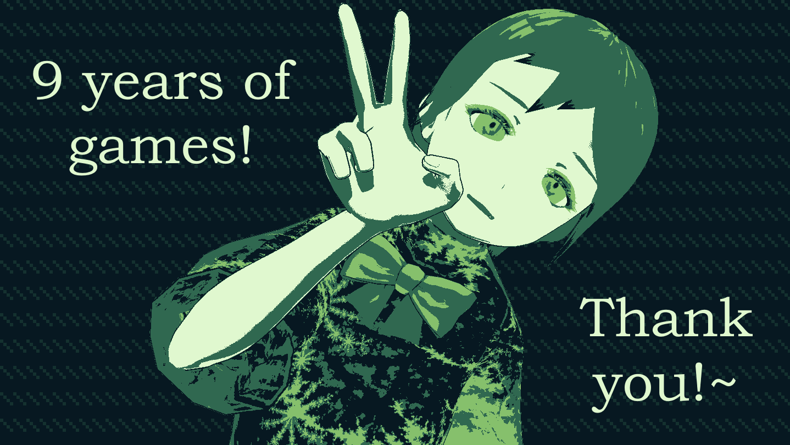
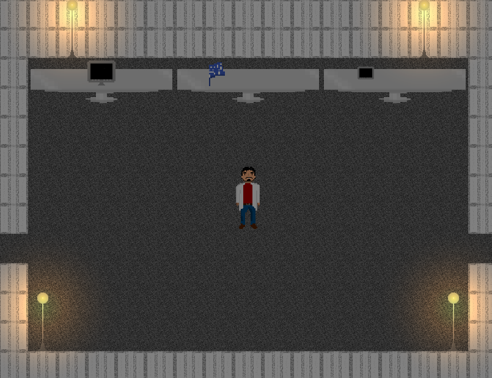
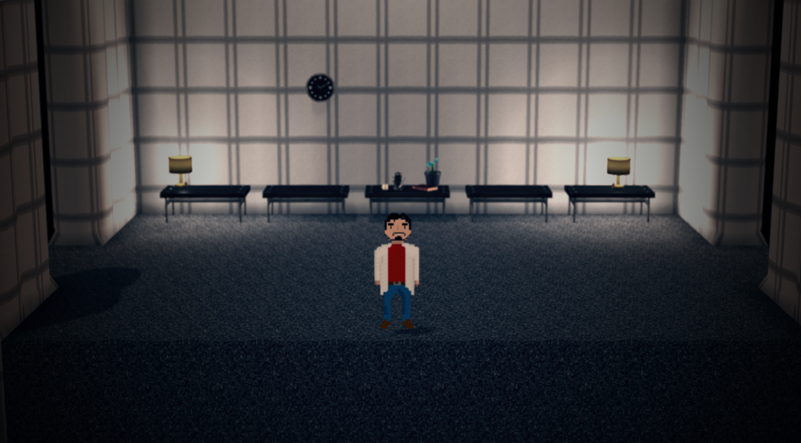

Hello everybody! Today makes nine whole years of publishing and releasing games under Creatalsoftware, nearly a whole decade! That's a shockingly long time. So, as is tradition, I have some stuff I'd like to do to somewhat celebrate the occasion with some plans and news.
Garenburg Penitence
Small development update; testers are currently testing most of the game and it is still slated for a release soon. The original plans for a really nice and pretty release date of today kind of fell through because of how much longer some parts I needed to work on for it took than expected, and frankly put, I'm terrible at deadlines. But we're getting closer! To give a little bit of something rather than leave nothing, here's some artwork of Marjory, the protagonist of the game.

I'll continue chipping away at it... it's just going to take a bit longer unfortunately. Thank you for all your patience with this, really!
The Möbius Strip Remake
That's right, The Möbius Strip will be getting a 3D, HD remake in a new engine!
As the game is a very important entry into the Garenburg series but not on Steam, this will be a full remake from the ground up to bring it up to par with the other titles, as well as including a small amount of new content...
It will be on Steam as well, and with new graphics and visuals from the original artists of the game as well as some new talent brought to the table to make it the best it can be. It'll be worked on once Garenburg Penitence is done, which should be hopefully soon!
These images below were from experimenting and won't be the art used in the actual release as it relies on art from the original game, but here's a little test image showing the kind of direction it'll be going on visuals.
Here's it in the original game...

And here is a test using the original game assets; the remake will have brand new sprites and the like, so this is very placeholdery.

Archival Anemoia
A new project announcement... but this time for something with a definitive release date of 1/26/26, exactly a year from now!
Next year, to celebrate a whole decade, I'll have a massive game compilation and collection of projects that I've made over the years... all brought over to Steam! Games on Itch, IndieDB, and GameJolt, games that are no longer available online will be seeing the light of day again, an easier way to play other games in the Garenburg series including the original release of The Möbius Strip, and much more!
Included will be all the novellas and side stories, a whole art gallery of concept work, scrapped ideas and plans, retrospectives and post-mortems, and a lot more. It'll be a giant collection of everything I can think of and have archived and kept over the years and things that haven't made it outside my own personal archives. It'll be a lot... and it'll also be free, so hey, there's that!
It's a collection, museum, art book, music collection, and a lot more in one. This shows some test footage of a very very very work in progress test of trying to get it working.
You can see the experimental test at this link; it'll also have multiple themes you can toggle between!
Other Projects
I have some plans for a little bit of stuff with Garenburg Woods and Charmolypi this year, but they're not yet fully ready for much mention. I want to do at least something for Charmolypi yearly, but Garenburg Woods is just in a tough spot since it will have a lot of new free content with Pink Eyes but Pink Eyes is on the backburner for the other projects... We'll see how this all goes, I guess.\
Final Thoughts
It's extremely surreal to think that it's literally been nine years, and that it's so close to a decade now. I started all this in my youth, with a lot of these projects when I was a beginner. But to look at where things are now, the future of everything, and how things have been so far? It's exciting!
It's really, really nice being able to just take a step back and realize that yeah, these are all things that have been made and exist and have had some small audience. Sure, it's not giant and popular or anything. But I'm really happy with what I've had and I'll keep putting in all the work and effort that I can.
Thank you for reading all this, whoever you are, and I hope you have a good one! Shine as the stars beyond...
- Mireille Scieppan